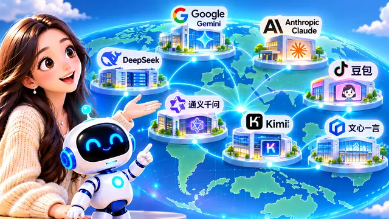

Welcome to Episode 4. Last time we stacked AI, machine learning, deep learning, LLMs, GPT, and ChatGPT into a pyramid. Today we ask a practical follow-up: who actually builds these models?
We will meet the “creators” — labs and companies around the world — and learn to separate three ideas that often get mashed together: the company, the model family, and the product you tap on your phone.
Each picture sits beside the idea it explains. By the end you should be able to name who made an AI tool and whether you are talking about a brand, an engine, or an app.
Episode 3 showed the pyramid under ChatGPT. This episode names the people and organizations who keep building that stack — so the names in your news feed stop sounding like magic.
Keep one notebook line ready: company · model · product. You will use it again and again.
Start with ChatGPT
ChatGPT is one of the most familiar AI products. The company behind it is OpenAI. OpenAI researches and trains the GPT family of models; ChatGPT is the product that lets you chat with those models.
Mix-up: “OpenAI, GPT, and ChatGPT are the same thing.”
They show up in the same headlines, but they play different roles. OpenAI is the organization. GPT names a line of models (with versions over time). ChatGPT is the app or website you use.
You might say, “I’m using GPT,” when you mean ChatGPT — people will understand, but for homework or a presentation, naming the layer you mean keeps you precise.
OpenAI trains and updates the GPT family; product teams design ChatGPT’s chat screen, history, and settings. Same company, two jobs — and that pattern repeats at Google, Anthropic, and others.
AI names from around the world
OpenAI is not the only creator. Teams in many countries build models and ship products.
Headlines love a single “winner,” but the real map has many labs. Today we widen the lens beyond one familiar logo.
In the United States you hear about Google’s Gemini and Anthropic’s Claude. In China, widely used names include DeepSeek (深度求索), 豆包 from ByteDance, Alibaba’s 通义千问, Moonshot’s Kimi, and Baidu’s 文心一言 series.
The logos change, but the pattern is similar: a company or team trains technology, then puts it inside a product you can open like any other app.
When a classmate says “try Kimi” or “Gemini answered faster,” they are talking about products built on top of models you may not see directly.
Meta also trains its own model lines for apps you may use. The label on the icon is rarely the full story — that is why the next habit matters.
Three questions before you click
Before you install another AI app, slow down for ten seconds. Three short questions turn a confusing logo into a clear picture.

Next time you see ChatGPT, Gemini, Claude, DeepSeek, 豆包, 通义千问, or Kimi, pause and ask: Who built it? Which model family is underneath? Am I using the model or the product right now?
Examples: OpenAI → GPT models → ChatGPT product. Google → Gemini models → Gemini product. Anthropic → Claude models → Claude product. DeepSeek → DeepSeek models → DeepSeek product. ByteDance → 豆包-related models → 豆包 product. Alibaba → 通义千问 models → 通义千问 product.
That way you will not mash company, model, and product into one word anymore — you can explain each layer to a friend who only knows the app icon.
Why so many different models?
AI is a huge field. Groups use different data, methods, and goals — so the world ends up with many models, not one single “brain.”
Some models focus on text; some on images; others handle text, pictures, audio, and video together. That is why your phone may hold more than one AI tool — each product picked a model that fits its job.
Picture a large tech world map: companies and universities in many regions, each contributing pieces. New releases are normal, not a sign that yesterday’s tool was “fake.”
Competition and sharing ideas both push the field forward — which is why Episode 1 warned against treating any one app as the whole of AI.
Today's AI world is not one shared “brain” in the sky — it is many models, each improving for different tasks, hooked to different products.
AI is a shared human project
Imagine a huge tech world: firms and universities in many regions, each shipping models into products we can download. That is the landscape this lesson describes.
AI progress does not belong to a single nation or a single company’s private corner. Researchers, engineers, and businesses on several continents keep improving data, safety, and capabilities.
The products you try this year are snapshots of that long, shared climb — built on open papers, huge datasets, and teams you will never meet in person.
Knowing the creators does not mean picking a “winning country.” It means seeing clearly what you are using and who shaped it.
The chat tools, editors, and assistants you try this month are what that cooperation looks like on your screen — results of techniques many groups keep refining.
Coming up next
You can now separate company, model, and product when a new name trends. So what can these tools actually create beyond quick answers?
Besides answering questions, the same labs behind those products are pushing models that write articles, draw images, compose music, plan video, and help with code. Creators matter because capabilities follow the teams that train them.
Next episode we explore what AI can make — writing, images, music, video, code, and more — and how “seen” and “unseen” AI show up in daily life.
Bring your three-question habit with you. See you in Episode 5.